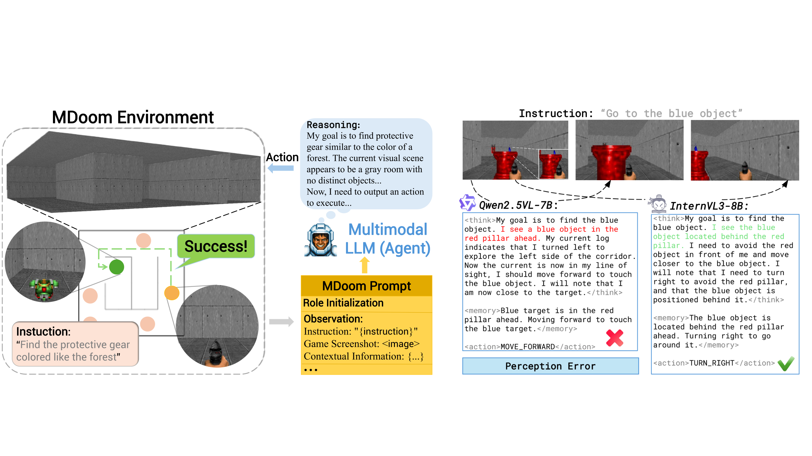

About
Hi, I am Tengfei Cheng. I majored in Computer Science and Technology at Guangxi University. I study how intelligent agents can reason, act, and improve through interaction and feedback. I began my research in time series forecasting with Prof. Yunxuan Dong at Guangxi University. Then, I worked as a Research Assistant at the University of Liverpool (supervised by Prof. Meng Fang), and at Shanghai Jiao Tong University (supervised by Prof. Ying Wen and Prof. Yang Li), focusing on multimodal embodied agents. I plan to pursue a master's degree and continue research on LLM-based and RL-based agents.
Research Interests
- LLM-based and RL-based agents
- Embodied Harness
- Self-improving agent systems
English Proficiency
IELTS overall: 6.5
Education
Guangxi University- B.Eng. in Computer Science and Technology
- Sep. 2022 – Jun. 2026
- Core courses: Advanced Mathematics 97; Probability & Statistics 98; Principles of AI 90.
News
- [Sep. 2026] DramaAgent accepted to AACL-IJCNLP 2026 Main Conference.
- [Aug. 2026] Paper on multi-periodicity learning for tidal current speed forecasting has been published in Electric Power Systems Research.
- [Jun. 2026] Started a Research Assistant position at Shanghai Jiao Tong University.
- [Jan. 2026] VaseVQA accepted to Findings of EACL 2026.
Experiences
Mentor: Prof. Ying Wen and Prof. Yang Li
Publications ( / )
* Equal contribution.

VaseVQA: Multimodal Agent and Benchmark for Ancient Greek Pottery

A multi-periodicity learning model for tidal current speed forecasting
DramaAgent: Agentic Storytelling Video Generation
Hierarchical story planning, persistent character conditioning, and reflection-guided repair for coherent long-form audiovisual generation.

MDoom: A Benchmark for Evaluating Agentic Multimodal LLMs in Doom Environments
Projects
Enterprise Practical Training · Team Lead · Oct. – Nov. 2024
Led a team to develop a full-stack web application with Spring Boot and Vue.
National Undergraduate Training Program for Innovation and Entrepreneurship · May 2024 – May 2025
Implemented gesture recognition with computer vision. The project received provincial-level approval and a “Good” completion rating.
Honors & Awards
- Honorable Mention, Mathematical Contest in Modeling (MCM), USA.
- Provincial Second Prize, China Undergraduate Mathematical Contest in Modeling (CUMCM).
Hobbies
Outside of research, I enjoy hiking and playing badminton 🏸
- 5th place, Men’s Singles, Lotus Cup Badminton Competition, Guangxi University.
- 1st place, Men’s Singles, School-level Badminton Tournament, Guangxi University.
- National Level-3 Badminton Referee.